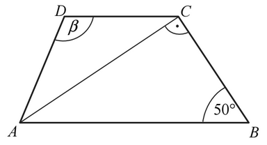
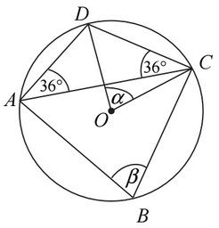
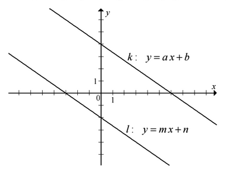
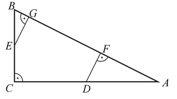
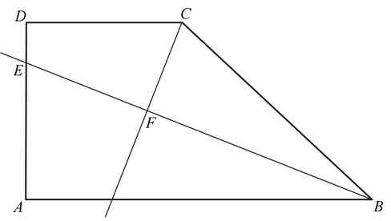
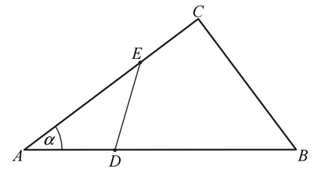

Matura 2016 czerwiec
Liczba \(\frac{7^6\cdot 6^7}{42^6}\) jest równa
A.\( 42^{36} \)
B.\( 42^7 \)
C.\( 6 \)
D.\( 1 \)
C
Cenę pewnego towaru podwyższono o \(20\%\), a następnie nową cenę tego towaru
podwyższono o \(30\%\). Takie dwie podwyżki ceny tego towaru można zastąpić równoważną im jedną
podwyżką
A.o \( 50\% \)
B.o \( 56\% \)
C.o \( 60\% \)
D.o \( 66\% \)
B
Liczba \(\sqrt[3]{3\sqrt{3}}\) jest równa
A.\( \sqrt[6]{3} \)
B.\( \sqrt[4]{3} \)
C.\( \sqrt[3]{3} \)
D.\( \sqrt{3} \)
D
Różnica \(50001^2 - 49999^2\) jest równa
A.\( 2\ 000\ 000 \)
B.\( 200\ 000 \)
C.\( 20\ 000 \)
D.\( 4 \)
B
Najmniejsza wartość wyrażenia \((x-y)(x+y)\) dla \(x,y\in \{2,3,4\}\) jest równa
A.\( 2 \)
B.\( -24 \)
C.\( 0 \)
D.\( -12 \)
D
Wartość wyrażenia \(\log_3\frac{3}{2}+\log_3\frac{2}{9}\) jest równa
A.\( -1 \)
B.\( -2 \)
C.\( \log_3\frac{5}{11} \)
D.\( \log_3\frac{31}{18} \)
A
Spośród liczb, które są rozwiązaniami równania \((x-8)(x^2-4)(x^2+16)=0\) wybrano
największą i najmniejszą. Suma tych dwóch liczb jest równa
A.\( 12 \)
B.\( 10 \)
C.\( 6 \)
D.\( 4 \)
C
Rozwiązaniem równania \(\frac{x-7}{x}=5\), gdzie \(x\ne 0\) jest liczba należąca do
przedziału
A.\( (-\infty ,-2) \)
B.\( \langle -2,-1) \)
C.\( \langle -1,0) \)
D.\( (0,+\infty ) \)
B
Funkcja \(f\) określona jest wzorem \(f(x)=\frac{2x^3}{x^4+1}\) dla każdej liczby
rzeczywistej \(x\). Wtedy liczba \(f(-\sqrt{2})\) jest równa
A.\( -\frac{8}{5} \)
B.\( -\frac{4\sqrt{2}}{3} \)
C.\( -\frac{4\sqrt{2}}{5} \)
D.\( -\frac{4}{3} \)
C
Dana jest funkcja kwadratowa \(f(x)=-2(x+5)(x-11)\). Wskaż maksymalny przedział, w
którym funkcja \(f\) jest rosnąca.
A.\( (-\infty ,3\rangle \)
B.\( (-\infty ,5\rangle \)
C.\( (-\infty ,11\rangle \)
D.\( \langle 6,+\infty ) \)
A
Ciąg \((a_n)\) jest określony wzorem \(a_n=6(n-16)\) dla \(n\ge 1\). Suma
dziesięciu początkowych wyrazów tego ciągu jest równa
A.\( -54 \)
B.\( -126 \)
C.\( -630 \)
D.\( -270 \)
C
Dany jest ciąg geometryczny \((a_n)\), w którym \(a_1=72\) i \(a_4=9\). Iloraz
\(q\) tego ciągu jest równy
A.\( q=\frac{1}{2} \)
B.\( q=\frac{1}{6} \)
C.\( q=\frac{1}{4} \)
D.\( q=\frac{1}{8} \)
A
Dany jest trapez \(ABCD\), w którym przekątna \(AC\) jest prostopadła do ramienia
\(BC\), \(|AD|=|DC|\) oraz \(|\sphericalangle ABC|=50^\circ \) (zobacz rysunek).  Stąd wynika, że
A.\( \beta =100^\circ \)
B.\( \beta =120^\circ \)
C.\( \beta =110^\circ \)
D.\( \beta =130^\circ \)
A
Punkty \(A\), \(B\), \(C\) i \(D\) leżą na okręgu o środku \(O\) (zobacz rysunek).
Miary zaznaczonych kątów \(\alpha \) i \(\beta \) są odpowiednio równe 
A.\( \alpha =36^\circ,\ \beta =72^\circ \)
B.\( \alpha =54^\circ,\ \beta =72^\circ \)
C.\( \alpha =36^\circ,\ \beta =108^\circ \)
D.\( \alpha =72^\circ,\ \beta =72^\circ \)
D
Słoń waży \(5\) ton, a waga mrówki jest równa \(0{,}5\) grama. Ile razy słoń jest
cięższy od mrówki?
A.\( 10^6 \)
B.\( 10^7 \)
C.\( 10 \)
D.\( 10^8 \)
B
Każde z ramion trójkąta równoramiennego ma długość \(20\). Kąt zawarty między
ramionami tego trójkąta ma miarę \(150^\circ \). Pole tego trójkąta jest równe
A.\( 100 \)
B.\( 200 \)
C.\( 100\sqrt{3} \)
D.\( 100\sqrt{2} \)
A
Prosta określona wzorem \(y=ax+1\) jest symetralną odcinka \(AB\), gdzie
\(A=(-3,2)\) i \(B=(1,4)\). Wynika stąd, że
A.\( a=-\frac{1}{2} \)
B.\( a=\frac{1}{2} \)
C.\( a=-2 \)
D.\( a=2 \)
C
Układ równań \(\begin{cases} y=-ax+2a \\ y=\frac{b}{3}x-2 \end{cases} \) nie ma
rozwiązań dla
A.\( a=-1 \) i \(b=-3\)
B.\( a=1 \) i \(b=3 \)
C.\( a=1 \) i \(b=-3 \)
D.\( a=-1 \) i \(b=3 \)
C
Do pewnej liczby \(a\) dodano \(54\). Otrzymaną sumę podzielono przez \(2\). W
wyniku tego działania otrzymano liczbę dwa razy większą od liczby \(a\). Zatem
A.\( a=27 \)
B.\( a=18 \)
C.\( a=24 \)
D.\( a=36 \)
B
Podstawą ostrosłupa prawidłowego czworokątnego \(ABCDS\) jest kwadrat \(ABCD\).
Wszystkie ściany boczne tego ostrosłupa są trójkątami równobocznymi. Miara kąta \(ASC\) jest równa
A.\( 45^\circ \)
B.\( 30^\circ \)
C.\( 75^\circ \)
D.\( 90^\circ \)
D
Rzucamy trzy razy symetryczną monetą. Niech \(p\) oznacza prawdopodobieństwo
otrzymania dokładnie jednego orła w tych trzech rzutach. Wtedy
A.\( 0\le p\le 0{,}25 \)
B.\( 0{,}25\le p\le 0{,}4 \)
C.\( 0{,}4\le p\le 0{,}5 \)
D.\( p\gt 0{,}5 \)
B
Średnia arytmetyczna czterech liczb: \(x−1,\ 3x,\ 5x+1\) i \(7x\) jest równa
\(72\). Wynika stąd, że
A.\( x=9 \)
B.\( x=10 \)
C.\( x=17 \)
D.\( x=18 \)
D
Na rysunku przedstawione są dwie proste równoległe \(k\) i \(l\) o równaniach
\(y=ax+b\) oraz \(y=mx+n\). Początek układu współrzędnych leży między tymi prostymi.  Zatem
A.\( a\cdot m\gt 0 \) i \(b\cdot n\gt 0\)
B.\( a\cdot m\gt 0 \) i \(b\cdot n\lt 0\)
C.\( a\cdot m\lt 0 \) i \(b\cdot n\gt 0\)
D.\( a\cdot m\lt 0 \) i \(b\cdot n\lt 0\)
B
Dane są dwie sumy algebraiczne \(3x^3-2x\) oraz \(-3x^2-2\). Iloczyn tych sum jest
równy
A.\( -9x^5+4x \)
B.\( -9x^6+6x^3-6x^2+4x \)
C.\( -9x^5+6x^3-6x^2+4x \)
D.\( -9x^6+4x \)
A
Punkty \(D\) i \(E\) są środkami przyprostokątnych \(AC\) i \(BC\) trójkąta
prostokątnego \(ABC\). Punkty \(F\) i \(G\) leżą na przeciwprostokątnej \(AB\) tak, że odcinki
\(DF\) i \(EG\) są do niej prostopadłe (zobacz rysunek). Pole trójkąta \(BGE\) jest równe \(1\), a
pole trójkąta \(AFD\) jest równe \(4\).  Zatem pole trójkąta \(ABC\) jest równe
A.\( 12 \)
B.\( 16 \)
C.\( 18 \)
D.\( 20 \)
D
Rozwiąż równanie \(\frac{2x+1}{2x}=\frac{2x+1}{x+1}\), gdzie \(x\ne -1\) i \(x\ne
0\).
\(x=-\frac{1}{2}\) oraz \(x=1\)
Dane są proste o równaniach \(y=x+2\) oraz \(y=-3x+b\), które przecinają się w
punkcie leżącym na osi \(Oy\) układu współrzędnych. Oblicz pole trójkąta, którego dwa boki zawierają
się w danych prostych, a trzeci jest zawarty w osi \(Ox\).
\(\frac{8}{3}\)
Wykaż, że dla dowolnych liczb rzeczywistych \(x\), \(y\) prawdziwa jest nierówność
\[x^4+y^4+x^2+y^2\ge 2(x^3+y^3)\]
Dany jest trapez prostokątny \(ABCD\) o podstawach \(AB\) i \(CD\) oraz wysokości
\(AD\). Dwusieczna kąta \(ABC\) przecina ramię \(AD\) w punkcie \(E\) oraz dwusieczną kąta \(BCD\) w
punkcie \(F\) (zobacz rysunek). 
Wykaż, że w czworokącie \(CDEF\) sumy miar przeciwległych kątów są sobie równe.
W trójkącie \(ABC\) dane są długości boków \(|AB|=15\) i \(|AC|=12\) oraz \(\cos
\alpha =\frac{4}{5}\), gdzie \(\alpha =\sphericalangle BAC\). Na bokach \(AB\) i \(AC\) tego
trójkąta obrano punkty odpowiednio \(D\) i \(E\) takie, że \(|BD|=2|AD|\) i \(|AE|=2|CE|\)(zobacz
rysunek).  Oblicz pole
trójkąta \(ADE\).
czworokąta \(BCED\).
Dany jest ciąg arytmetyczny \((a_n)\) określony dla każdej liczby naturalnej \(n\ge
1\), w którym \(a_1+a_2+a_3+a_4=2016\) oraz \(a_5+a_6+a_7+...+a_{12}=2016\). Oblicz pierwszy wyraz,
różnicę oraz najmniejszy dodatni wyraz ciągu \((a_n)\).
\(a_1=567\), \(r=-42\), \(a_{14}=21\)
Dany jest stożek o objętości \(8\pi \), w którym stosunek wysokości do promienia
podstawy jest równy \(3:8\). Oblicz pole powierzchni bocznej tego stożka.
\(2\pi \sqrt{73}\)
Rejsowy samolot z Warszawy do Rzymu przelatuje nad Austrią każdorazowo tą samą
trasą z taką samą zakładaną prędkością przelotową. We wtorek jego średnia prędkość była o \(10\%\)
większa niż prędkość przelotowa, a w czwartek średnia prędkość była o \(10\%\) mniejsza od
zakładanej prędkości przelotowej. Czas przelotu nad Austrią w czwartek różnił się od wtorkowego o
\(12\) minut. Jak długo trwał przelot tego samolotu nad Austrią we wtorek?
\(54\) minuty